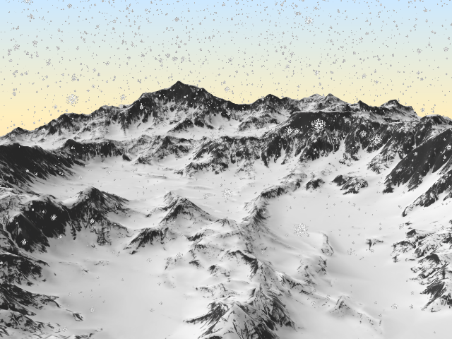
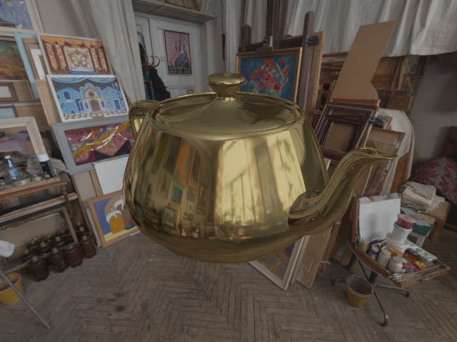

Following are some of many projects that I have worked on over the years.
Very few of them have been salvaged, mostly due to the fact that the codebase for them was dirty and I was not satisfied with the final product to the point of continuing my work on them.
Also, none of these projects took more than a week to complete.

Simple snow particles effect demo done in OpenGL.
Particle attributes, such as velocity and position, are stored in a texture buffer which is computed and updated via shader, for improved performance.
View more

Quick and dirty PBR (physically based rendering) pipeline implementation in OpenGL.
Can be used to explore the (approximated) behaviour of rough, smooth, metallic or dielectric materials under different environments and parameters.
View more